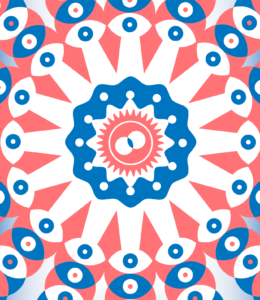

{Fanzine#3} Gli Infetti della Terra

Questo è il terzo articolo della nostra fanzine dedicata ai MICROBI, il tema che abbiamo affrontato a Scienceground 1.5. Trovi gli altri articoli e l’indice della fanzine qui:
- Un segnale nel rumore
- Gioco in società: il Dottor Semmelweis
- Gli infetti della Terra
- Intessere mondi
- That’s symbiosis, baby: arte, biologia e altre storie
[Illustrazione di Nello Alfonso Marotta]
«That is why we must put the DDT which destroys parasites, the bearers of disease, on the same level as the Christian religion which wages war on embryonic heresies and instincts, and on evil as yet unborn. The recession of yellow fever and the advance of evangelization form part of the same balance sheet.»
Franz Fanon, The Wretched of the Earth (Fanon, 1963)
Trentaquattro anni dopo Ignàc Semmelweis, e quarantatrè prima de Il Dottor Semmelweis di Céline (Céline, 1924), in Francia Louis Pasteur e colleghi si servirono del concetto di “microbo” per dare validità alla teoria del contagio e produrre i primi vaccini. Il nome “Pasteur” è ora quello di uno dei più grandi scienziati mai vissuti.
Come riuscì “Pasteur” ad avere successo là dove “Semmelweis” fallì?
Attraverso le pagine del saggio di Bruno Latour The pasteurization of France (Latour, 1988) e vari altri testi tentiamo di confrontare i percorsi (anti)paralleli di queste due figure.
Semmelweis il mistico
Nel saggio in calce all’edizione Adelphi de Il dottor Semmelweis, Guido Ceronetti sottolinea come quella di Céline sia una specie di agiografia laica: i medici del “tempio” della conoscenza, l’ospedale moderno di Vienna, sono i “miscredenti” che, avendo spogliato la morte di ogni aspetto sacrale, si sono spinti a violare i corpi umani per sete di conoscenza, dissezionandoli fin nei loro più reconditi anfratti. Per questo, si sono attirati addosso una maledizione mortifera.
Ecco quindi l’arrivo del “santo” Semmelweis che reintroduce le pratiche rituali (come il lavaggio accurato delle mani dopo ogni dissezione) necessarie alla redenzione dell’umanità, pagando però con la vita. Questa lettura introduce subito un aspetto importante per spiegare il fallimento di Semmelweis e il successo di Pasteur: quest’ultimo, come vedremo, saprà conciliare il “miracolo” delle guarigioni con il razionalismo illuminato che è considerato alla base delle pratiche scientifiche.
L’accumulazione del sapere ostetrico
Prima di compiere il salto in avanti verso Pasteur, facciamone uno indietro di due secoli. Seguendo quanto scrive Silvia Federici in Calibano e la strega (Federici, 2004) vogliamo introdurre una serie di considerazioni di carattere economico e sociale che illuminano in modo più completo la situazione specifica dell’ospedale di Vienna ai primi dell’Ottocento, un caso in cui la scienza dello Stato ottiene risultati peggiori rispetto alle pratiche tradizionali considerate superate.
L’accantonamento delle forme di conoscenza medica tradizionali in favore del sapere “illuminato” e razionale fu un processo sistematico che ebbe luogo in Europa fra il XVI e il XVII secolo. Ciò non avvenne tanto in virtù di un inevitabile “progresso scientifico-tecnologico”, quanto piuttosto per motivi economici e sociali. La gerarchizzazione della società secondo le logiche dell’emergente sistema capitalistico richiedeva un accentramento, cioè un’accumulazione, anche delle conoscenze necessarie all’esercizio del potere sulle funzioni vitali stesse della popolazione, nell’ambito della sua riconversione in forza lavoro salariata.
In particolare vogliamo riferirci al controllo sulla riproduzione di questa forza lavoro. Questo tipo di accumulazione ha avuto, com’è oggi facile immaginare, natura patriarcale La sua narrazione/spiegazione “positivista” è invece espressa nei termini di uno scontro fra “scienza” e “superstizione” (con la seconda che soccombe alla prima), ed è proseguita con la criminalizzazione di molte antiche pratiche mediche o pseudomediche tradizionalmente poste sotto il controllo femminile, culminando in stragi e uccisioni sistematiche (la caccia alle streghe). Scrive Federici:
«[…] the suspicion under which midwives came in this period [XVI e XVII secolo] — leading to the entrance of the male doctor into the delivery room — stemmed more from the authorities’ fears of infanticide than from any concern with the midwives’ alleged medical incompetence. With the marginalization of the midwife, the process began by which women lost the control they had exercised over procreation, and were reduced to a passive role in child delivery, while male doctors came to be seen as the true “givers of life” (as in the alchemical dreams of the Renaissance magicians). With this shift, a new medical practice also prevailed, one that in the case of a medical emergency prioritized the life of the fetus over that of the mother. This was in contrast to the customary birthing process which women had controlled; and indeed, for it to happen, the community of women that had gathered around the bed of the future mother had to be first expelled from the delivery room, and midwives had to be placed under the surveillance of the doctor, or had to be recruited to police women.»
Vediamo bene che nel caso di Semmelweis, riferirsi ai dottori viennesi come “givers of life” è una crudele ironia.

Amici e nemici dei microbi
Eccoci dunque a Pasteur. In primo luogo, Latour suggerisce che l’invenzione del laboratorio moderno fu cruciale, non solo in termini scientifici ma anche sociali, per creare il giusto contesto per l’affermarsi di una “rivoluzione scientifica”.
Al di fuori del laboratorio, i fenomeni hanno il potere sul ricercatore; all’interno del laboratorio, il ricercatore ha il potere sui fenomeni. Quindi nel caso di Semmelweis erano i microbi a utilizzare i dottori come strumenti per i loro obiettivi: infettare i corpi umani servendosi delle mani dei dottori come mezzo di trasporto. Nel caso di Pasteur, invece, sono i dottori che usano i microbi per i loro obiettivi: curare i corpi e prevenire le infezioni, iniettando loro stessi i microbi nei corpi vivi, ma solo dopo aver preso il controllo della loro virulenza.
Il movimento igienista
La pesante sconfitta nella guerra franco-prussiana del 1870 aveva colpito profondamente l’opinione pubblica francese. Si era fatta strada l’idea di una “decadenza” del popolo francese, anche a livello biologico (crollo delle nascite), che ne avrebbe messo in discussione la stessa sopravvivenza; a questo fatto va sommato un nazionalismo revanscista nei riguardi dello smacco subito e dei territori perduti.
Il gruppo dei cosiddetti “igienisti” identificò i caratteri di questa decadenza nelle condizioni di vita della popolazione, gravemente peggiorate a causa di inurbamento, processi di industrializzazione, sovrappopolazione, povertà diffusa, etc. Gli igienisti, che erano scienziati, ma anche giornalisti, attori politici e in generale parte dell’opinione pubblica, tentavano di porre rimedio a questi problemi cercando di agire su tutti gli aspetti della vita pubblica: dalla salubrità dei quartieri popolari, a politiche per il miglioramento delle condizioni di vita delle classi subalterne, e così via, inclusa la nascente batteriologia. Quindi l’attività degli igienisti non si riduceva solo all’ambito scientifico, ma comprendeva anche quello sociale, e in effetti, secondo Latour, fra i due ambiti non venivano fatte troppe distinzioni. Tuttavia le soluzioni generiche e ad ampio spettro proposte dagli igienisti non erano sempre efficaci.
Pasteur lo scienziato
Il fulcro delle ricerche in laboratorio di Pasteur, che gli permise di allineare i propri obiettivi con quelli di altri gruppi (gli igienisti, i medici, i politici, gli industriali) fu lo studio dell’influenza dell’ambiente esterno sul contagio.
In particolare, due scoperte sulle colture batteriche di antrace/carbonchio (una gravissima malattia del bestiame) furono rilevanti: (i) l’attenuazione della virulenza delle colture batteriche quando sottoposte a ventilazione con ossigeno (la ventilazione dei locali era naturalmente una pratica già nota); (ii) la possibilità di far ammalare anche i polli (normalmente immuni) se la loro temperatura corporea veniva abbassata a sufficienza (anche qui, si tratta di una considerazione fisiologica già nota – se fa freddo ci si ammala più facilmente – ma tradotta da Pasteur nel linguaggio della batteriologia).
Infine, una coltura dimenticata per errore in particolari condizioni di attenuazione e poi inoculata in un animale, che non si ammalò, e poi sopravvisse più a lungo degli altri quando inoculato con una coltura fresca, costituì il primo esempio di vaccino prodotto in laboratorio da Pasteur.
Pasteur e il networking
Pouilly-le-fort, 5 maggio 1881. Siamo arrivati ad un climax faticosamente e meticolosamente preparato da Pasteur e dai pasteuriani: una dimostrazione-spettacolo dell’efficacia del vaccino contro l’antrace/carbonchio, una malattia ora spiegata in termini di microbi, organizzata con lo scopo di convincere il più alto numero di persone (e grandi gruppi d’interesse) possibile. Questo lo spettacolo accuratamente preparato: metà di un gregge di pecore venne inoculato con il batterio attenuato (il vaccino); l’altra metà rimase senza protezione. In seguito il batterio originale venne inoculato in entrambi i gruppi di pecore. Risultato: tutte le pecore vaccinate sopravvissero, tutte quelle non vaccinate perirono. L’impatto mediatico, diremmo oggi, fu enorme, e Pasteur divenne il profeta degli igienisti attraverso la propria “alleanza” (coatta) con i batteri.
Altro che Semmelweis e il lavamani col cloruro di calce nel padiglione di ostetricia! Pasteur pensa molto più in grande e sembra aver compreso che la “verità scientifica” si costruisce anche convergendo verso ideologie e obiettivi di altri gruppi sociali (interni o esterni alle scienze), per cooptarli o farsi cooptare da essi.
“Pasteur” è l’anti-“Semmelweis”?
Ecco che il movimento igienista ha finalmente l’occasione di creare consenso e ottenere visibilità e rilievo. Tutte le posizioni igieniste collassano sulla singola soluzione, di natura tecnico-scientifica, prodotta da Pasteur. Le profonde ramificazioni socioeconomiche del “problema dell’igiene” vengono perlopiù abbandonate dagli igienisti, mentre le scoperte di Pasteur vengono da loro immediatamente generalizzate anche a prescindere dalla rigorosa applicazione del metodo scientifico. Durante questo processo avviene la trasformazione-apoteosi di Pasteur in “Pasteur”, come lo denota Latour. Da batteriologo a dispensatore di miracoli. Da scienziato a santo.
La diffusione rapidissima delle teorie di Pasteur avviene tramite la continua cooptazione di gruppi “alleati” che si uniformano agli obiettivi dei pasteuriani/igienisti. I chirurghi, i medici dell’esercito. Maggiore resistenza viene offerta dai medici comuni, che si oppongono alla trasformazione radicale della loro disciplina: non vogliono diventare dei meri esecutori dei diktat “scientifici” del pasteurismo in un mondo nuovo in cui le malattie non vengono più curate, ma solo prevenute. Ciò li relegherebbe ad essere dei semplici agenti di controllo sociale, mentre la “scienza” e le leggi sull’igiene pubblica vengono imposte attraverso di loro. Alla fine, però, con l’invenzione da parte dei pasteuriani dell’immunologia e la scoperta del siero per curare la difterite, sono proprio i medici a mangiarsi il pasteurismo e a farlo diventare parte della storia della medicina: le profilassi antibatteriche alterano solo leggermente le loro pratiche abituali e permettono loro di incrementare il proprio prestigio tramite il marchio “Pasteur”. In cambio, accettano il ruolo di funzionari controllori dell’igiene pubblica. A questo punto, la somministrazione forzata della nuova igiene ai poveri può cominciare, perché i poveri non sono utili a rendere la scienza “indisputabile”, e quindi non devono essere convinti, ma solo obbligati. Le prescrizioni dell’Institut Pasteur diventano strumenti di controllo sociale.
La ricerca e i risultati di Semmelweis, al contrario, non si prestavano affatto a simili narrazioni ed alleanze. Semmai l’opposto: gettavano in orrida luce il potere già costituito dei medici e della medicina in un contesto in cui mancavano le precondizioni per una rapida accettazione delle sue teorie da parte di altri attori sociali. Secondo questa lettura, non sorprende che le sue idee non si siano affermate e che costui, nella narrazione di Céline, non poté far altro che gridare la propria verità in tutti i modi sbagliati.
La “verità microbica” al servizio del potere: guerra mondiale e sfruttamento coloniale
Ci avviamo alla conclusione citando provocatoriamente due passi di Latour (Cap. 3).
L’igiene in guerra (p.112):
«World War One was, in the opinion of all, a triumph of modern hygiene. Without the bacteriologists, the generals would never have been able to hold on to millions of men for four years in muddy, rat-infested trenches. These men would have died before gas and machine guns had carried them off. This war was the first in which one could kill immobile masses, because hitherto in history microbes had always done the job better. After this triumph of bacteriology, the Spanish flu wiped out some fifty million people in 1919 without the Pasteurians being able even to identify the agent.»
Lo scienziato-politico invade il continente africano (p. 141):
«With each parasite conquered, the columns of soldiers, missionaries, and colonists became visible on the map of Africa and Asia, sailing up the rivers and invading the plains, just as, thirty years before, the surgeons tackled new organs with each step in the progress of asepsia: “So it is thanks to these two scientists (Bouet and Roubaud) that we now know the various modes of propagation of the trypanosomiases that form the principal obstacle — one might almost say the only obstacle — to the exploitation of the enormous African quadrilateral that extends between Guinea, the Upper Nile, Rhodesia, and Angola” (Calmette:19 12, p. 132). This politico-military role given to the biologist was explicitly claimed by the Pasteurians. Roux, praising the work of Laveran in 1915, exclaims: “Thanks to them (the scientists), lands that malaria forbade to the Europeans are opened up to civilization. It is thus that the work of a scientist may have consequences for mankind that go well beyond those of the conceptions of our greatest statesmen” (1915, p. 410). Yes, that’s it: they go beyond those of the greatest statesmen, because instead of pursuing politics with politics, the scientists were pursuing it with other means. This unforeseeable supplement of force gave them that superlative politics which made it possible to act on the poor, on the inhabitants of Madagascar, on the surgeons, on the Africans, and on the dairies. Pasteur was hailed as a more famous conqueror than that of Austerlitz.»
Conclusioni
Ogni fondamentale innovazione tecnica porta con sé luci e ombre, perché scienza e società non si possono separare o ridurre l’una all’altra. E la responsabilità dello scienziato è anche una responsabilità sociale. Non ci si può chiamare fuori, come forse avrebbe voluto fare il celebre fisico Richard Feynman (Feynman, 1955) all’indomani della sua partecipazione al progetto Manhattan, sulla base di una presunta neutralità morale dell’attività scientifica (Tomatis, 2015).
Né si può ritenere che problemi pervasivi e strutturali si possano risolvere soltanto attraverso innovazioni tecnologiche (Capocci, 2019). La storia di “Pasteur” e di “Semmelweis” può aiutarci a riflettere sul modo in cui dovremmo inquadrare i grandi problemi che ci riguardano. Questa considerazione (e suggerimento, e preghiera) vuole essere specialmente rivolta a chi si occupa di scienza e di divulgazione scientifica.
Bibliografia
(Fanon, 1964) F. Fanon, The Wretched of the Earth, Grove Press (1963).
(Céline, 1924) L.-F. Céline, La Vie et l’œuvre de Philippe Ignace Semmelweis, tesi di dottorato (trad. it. Il Dottor Semmelweis Adelphi, 1975).
(Latour, 1988) B. Latour, The Pasteurization of France, Harvard University Press (1988).
(Federici, 2004) S. Federici. Caliban And The Witch: Women, The Body, and Primitive Accumulation, Autonomedia (2004)
(Tomatis, 2015) La «neutralità» che difende Golia. Scienza, feticismo dei “fatti” e rimozione del conflitto, Giap (agosto 2015).
(Feynman, 1955) R. Feynman, The value of science, lezione pubblica, in R. Feynman,“What do you care what other people think?” Further adventures of a curious character, W. W. Norton (1988).
(Capocci, 2019) A. Capocci, La tecnica non ci salverà, Jacobin Magazine (settembre 2019).